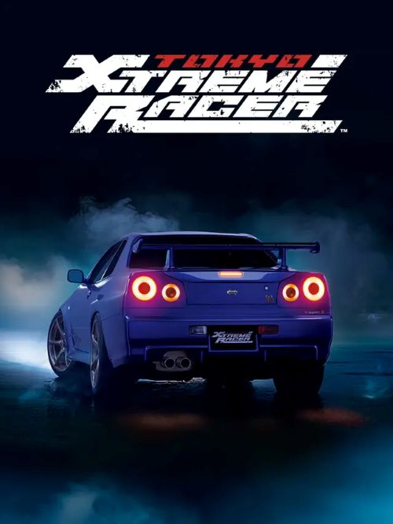

Tokyo Xtreme Racer 6gb
Género: Carreras, Mundo abierto, Simulación
"Tokyo Xtreme Racer" es un juego de carreras ambientado en un futuro bloqueado
de Tokio, donde los jugadores pretenden ser los más rápidos conduciendo sus
mejores coches por las autopistas que atraviesan la ciudad.